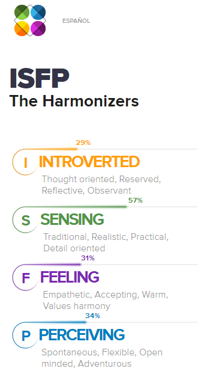
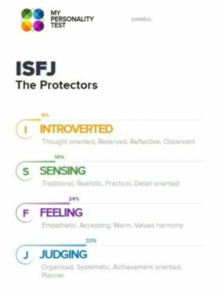
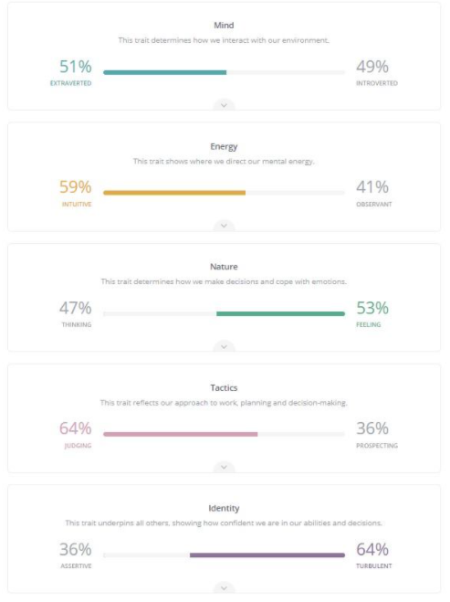
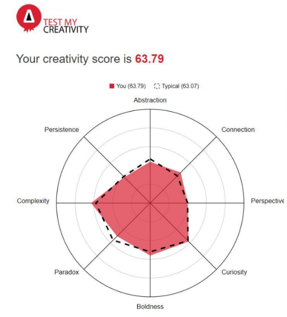
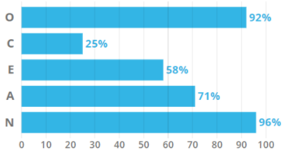

Meet Our JustGo Team

Thao Huynh
UI/UX Designer

Linh Vu
Frontend Engineer

Nguyen Vu
Backend Engineer

With expertise in Marketing, I am confident when taking on the job as UI / UX User who will always update trend, identify problems and users' need to understand the user's psychology, thereby giving out a sketch for the interface of the website or mobile app to maximize the function effectively and convey the desire of the brand to the customer. The result of my personality test is ISFP (Introverted, Sensing, Feeling, Perceiving). Being subtle, understanding, and responsive to situations, and knowing how to persuade and listen is important to a UI / UX designer. While working on a project, I am also detail-oriented, this helps me take care of every detail in the process of sketching to create the best product. I also want to bring values harmony, the comfort of working as a team is a goal that I always uphold, I am also a very empathetic, open-minded person to truly understand my teammate together. cooperate in the best way.
 CloseAs one of the teammates with the most similar personality to me when having a personal test result is ISFJ (Introverted, Sensing, Feeling, Judging), Sourabi is suitable as a project manager. The project manager will be the manager of the entire project. The project manager will be the person to contact and work directly with the client, then communicate the customer's ideas to the team and at the same time will also evaluate and review the project and the team's progress. Give advice as well as respond to customers' requirements, complete on time, everything is on budget. A project manager will retest the entire project to make sure everything is in plan and that there will be no errors when it reaches the client. She shares a sharp, gentle personality, attentive to detail, has understanding, sympathy, and especially she is a person who knows how to plan, systematically, she is also achievement- oriented, this is a character that helps us to improve our will and spirit to devote our utmost efforts to achieve the goal set out. I firmly believe that thanks to these characteristics, she can manage everyone well, manage the whole project well by her planning ability, detailing the shortcomings, and correcting them at the right time. She will be a good "captain" who leads people to success.
 CloseLinh once shared with me that she loves being a front-end developer. A front-end developer will be the one who based on the Figma or blueprint of UI / UX designer, from there will know the idea of design, layout, the content of the website's interface to write code, while writing code, the front-end developer and UI / UX designer will communicate with each other to understand each other's ideas, listen and discuss each other's opinions to come up with the best quality product.
Her personality test showed that she is an extrovert, she has a good intuition and feeling everything sensitively. Linh has a very positive and positive expression in all situations, that's why her cheerfulness can bring laughter to my group. She plans well for her plans and she is confident in the decisions she makes. She can cope with emotions, confidence, and personality. Besides that, her Creativity test showed that she was also a creator, with complexity, curiosity, and boldness. These traits make her a perfect fit for a front-end developer.
  CloseHaving a background as an engineer, he shared that he wants to learn more to become a back-end developer who directly made this project a reality. As a back-end developer, he also relies on UI / UX design to know the features that UI / UX design needs to support when making the design (viable feature). The back-end will create a database based on statistics, estimate the number of databases for that website, create CRUD development, then the back-end developer will associate that CRUD development with the front-end.
Outstanding personalities are open-minded (92%) and neurotic (96%). He tends to have a lot of interests, a desire to learn and enjoy new experiences, has a high tendency to create. However, with a high score for neuroticism (96%), he is more likely to suffer from stress attacks, anxiety, and mood swings. This is considered one of the things that my team together improve and manage the workflow in the smoothest way, avoiding risk management while working.
 Close